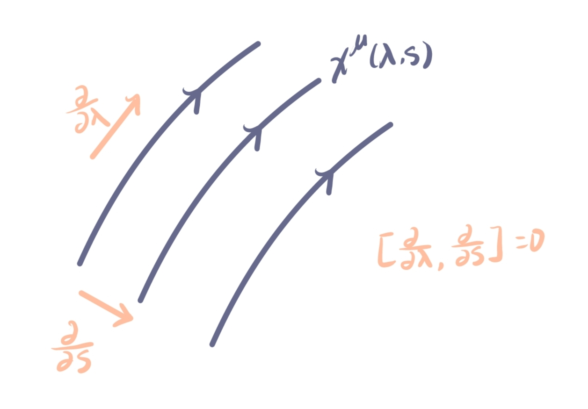

引力波引力辐射
谐和坐标条件
谐和坐标条件（de Donder gauge）为：
$$ g^{\mu \nu }\Gamma ^{\rho } _{\mu \nu} = 0\quad \Longleftrightarrow \quad \Box x^{\mu } = 0~, $$这里的 $x^{\mu }$ 应该当作一个标量函数而非矢量 . 注意这不是一个张量的表达式，我们使用这个坐标条件原因在于找到满足这个方程的参考系 $\{ x ^{ \mu }\}$ ，从而方便计算，且不改变我们想要研究的“物理” .
取无穷小坐标变换：$x^{\mu }\to x^{\prime \mu }=x^{\mu }-\zeta ^{\mu }\ , \zeta\to {0}$ ，对于线性化的度规 $g _{\mu \nu}=\eta _{\mu \nu}+h _{\mu \nu}$ 有
$$ \delta _{\zeta} g _{\mu \nu} = \mathcal{L} _{\zeta}g _{\mu \nu} = \nabla _{\mu}\zeta _{\nu}+\nabla _{\nu}\zeta _{\mu}~, $$这里 $\delta _{\zeta}$ 是指 $g _{\mu \nu}$ 的变分依赖于 $\zeta$ ，因此
$$ h _{\mu \nu}\to h _{\mu \nu}^{\prime } =h _{\mu \nu}+\mathcal{L} _{\zeta}\eta _{\mu \nu} = h _{\mu \nu}+\partial _{\mu}\zeta _{\nu}+\partial _{\nu}\zeta _{\mu}~, $$其中背景为 $\eta _{\mu\nu}$ ，所以 $\nabla\to \partial$ .1 类比于电磁场，在 $A^{\mu }\to A _{ \mu}^{\prime }=A _{\mu }+\partial _{\mu}\alpha$ 的规范变换下场强 $F _{\mu \nu }=\partial _{\mu}A _{\nu}-\partial _{\nu}A _{\mu}$ 是不变的 . 在引力场中，由于
$$ \begin{aligned} R^{\sigma } _{\; \rho \mu \nu} &= \partial _{\mu}\Gamma ^{\sigma } _{\nu \rho} - \partial _{\nu} \Gamma ^{\sigma } _{\mu \rho} + \mathcal{O}(\Gamma\Gamma-\Gamma\Gamma) \\ & = \frac{1}{2}\eta ^{\sigma\lambda }\left( \partial _{\mu}\partial _{\rho}h _{\nu\lambda}-\partial _{\mu}\partial _{\lambda}h _{\nu \rho}-\partial _{\nu}\partial _{\rho}h _{\mu\lambda}+\partial _{\nu}\partial _{\lambda}h _{\mu \rho} \right) \\ R^{\prime\sigma } _{\;\;\rho \mu \nu}&=R^{\sigma } _{\; \rho \mu \nu} +\frac{1}{2}\eta ^{\sigma\lambda }\left[ {\color{orange} (\mu \rho,\nu\lambda) }-(\mu\lambda,\nu \rho)-{\color{orange} (\nu \rho,\mu\lambda) }+(\nu\lambda,\mu \rho) \right] \\ &=R^{\sigma } _{\; \rho \mu \nu} +\frac{1}{2}\eta ^{\sigma\lambda }\underbrace{ \left[ (\mu \rho,\nu\lambda)-(\mu\lambda,\nu \rho)-(\mu \rho,\nu\lambda)+(\mu\lambda,\nu \rho) \right] } _{ =0 } \\ &=R^{\sigma } _{\; \rho \mu \nu}~, \end{aligned} $$这里 $(\mu \rho,\nu\lambda)=\partial _{\mu}\partial _{\rho}\left( \partial _{\nu}\zeta _{\lambda} + \partial _{\lambda}\zeta _{\nu} \right)$ ，其中 $\mu\leftrightarrow \rho,\nu\leftrightarrow\lambda$ 两对指标都是对称的，第三行到第四行只是把后 $2$ 项进行指标重命名 $\mu\leftrightarrow \nu$ . 从上式可以看到坐标变换 $ x^{\prime \mu }=x^{\mu }-\zeta ^{\mu }\ , \zeta\to {0}$ 导致的 $h^{\prime } _{\mu \nu} = h _{\mu \nu} + \partial _{\mu}\zeta _{\nu} + \partial _{\nu} \zeta _{\mu}$ 并不影响曲率张量 . 此外，由于度规的线性化 $|h|\ll 1$ ，所以在领头阶升降指标使用 $\eta _{\mu \nu}$ ，故对于 $R _{\mu \nu} = R^{\lambda } _{\ \mu\lambda \nu}$ 和 $R = \eta ^{\mu \nu }R _{\mu \nu}$ 同样也是不随坐标变换改变的. 因此这样的坐标变换不改变我们看到的“物理” ！
下面我们来体会谐和坐标条件如何让我们的计算更加简便 . 对于谐和坐标条件 $g^{\mu \nu}\Gamma ^{\lambda } _{\mu \nu}$ 在线性理论中有
$$ \begin{aligned} g^{\mu \nu }\Gamma ^{\lambda } _{\mu \nu} &\simeq \frac{1}{2} \eta ^{\mu \nu } \eta ^{\lambda \sigma} \left( \partial _{\mu}h _{\sigma \nu}+\partial _{\nu}h _{\mu\sigma}-\partial _{\sigma}h _{\mu \nu} \right) \\ & = \frac{1}{2}\left( \partial ^{\nu }h^{\lambda } _{\;\nu}+\partial ^{\mu }h _{\mu}^{\;\sigma }-\partial ^{\lambda }h^{\mu } _{\;\mu} \right) \\ \implies & \partial ^{\mu }h _{\mu \nu}- \frac{1}{2}\partial _{\nu}h = 0~, \end{aligned} $$从这个条件也可以看到若对于 $\partial ^{\mu }h _{\mu \nu}-\frac{1}{2}\partial _{\nu}h=f _{\nu}\neq {0}$ 时总可以选取 $\Box \zeta _{\nu}=-f _{\nu}$ 使得
$$ \begin{aligned} \partial ^{\mu }h _{\mu \nu}^{\prime }-\frac{1}{2}\partial _{\nu}h^{\prime } &= f _{\nu} + \partial ^{\mu }\partial _{\mu}\zeta _{\nu}+\partial ^{\mu }\partial _{\nu}\zeta _{\mu} - \frac{1}{2} \cdot 2\partial _{\nu} \partial ^{\mu }\zeta _{\mu} \\ &=f _{\nu}+\Box \zeta _{\nu} = 0~, \end{aligned} \tag{$\star\star$} $$此外，在这样的坐标规范下我们还有
$$ \begin{aligned} \Box &\equiv \nabla _{\mu}\nabla ^{\mu }=g^{\mu \nu }\left( \partial _{\mu}\partial _{\nu}-\Gamma ^{\rho } _{\mu \nu}\partial _{\rho} \right) = g^{\mu \nu }\partial _{\mu}\partial _{\nu} ~, \\ \nabla ^{\mu }A _{\mu}&= g^{\mu \nu }\nabla _{\mu}A _{\nu}=g^{\mu \nu }\left( \partial _{\mu}A _{\nu}-\Gamma ^{\rho } _{\mu \nu}A _{\rho} \right) = \partial _{\mu}A^{\mu }~. \end{aligned} $$自由度的讨论
根据上一节 $(\star\star)$ 式，我们分析在满足谐和坐标条件 $g^{\mu \nu }\Gamma ^{\rho } _{\mu \nu} = 0$ 坐标系 ${x^{\mu }}$ 下仍有冗余的自由度，即对于 $x\to\tilde{x}=x+\zeta ^{\mu },\ \Box \zeta ^{\mu }=0$ ，在新坐标系下 $\{ \tilde{x}^{\mu } \}$ 仍然有
$$ \partial ^{\nu }\bar{h} _{\mu \nu} = 0~, $$其中 $\bar{h} _{\mu \nu}\equiv h _{\mu \nu}-\frac{1}{2} \eta _{\mu \nu} h$ 为逆反张量（trace reverse tensor） ，因其 trace $\bar{h}=-h$ 而得名 . 也就是说，到这里我们有 $10-4=6$ 个自由度，其中 $10$ 源于 $ h _{\mu \nu}$ 是对称张量，$4$ 源于谐和坐标条件（四个方程 $\Leftrightarrow$ 四个约束），然而 $\Box \xi ^{\mu }=0$ 表明还有 $4$ 个自由度是非物理的 . 实际上，在这里我们并未引入运动学，即爱因斯坦方程的约束，在下文将看到场方程给出 $h _{\mu \nu}$ 的平面波方程，这是线性方程，给出四个约束 . 因此，on-shell（考虑运动学） 的 $h _{\mu \nu}$ 只有 $10-4-4=2$ 个物理自由度，而这 $2$ 个自由度分别表明引力波横向 (transverse) 和 无迹 （traceless） 的特性 .
引力波平面波解
平面波方程
在谐和坐标条件下，可以从爱因斯坦方程推导 $\bar{h} _{\mu \nu}$ 满足如下方程：
$$ \Box \bar{h} _{\mu \nu} = 0~, \tag{$\star \star\star$} $$其中 $\Box\equiv \nabla _{\mu}\nabla ^{\mu }=\partial _{\mu}\partial ^{\mu }$ ，由于在线性近似中由 $\eta _{\mu \nu}$ 升降指标，可以不再区分协变导数 $\nabla _{\mu}$ 与普通导数 $\partial _{\mu}$ .
下面我们推导 $(\star \star\star)$ ，对于黎曼曲率
$$ \begin{aligned} R _{\mu\nu} &= \partial _\lambda \Gamma^\lambda _{\mu\nu} - \partial _\nu \Gamma^\lambda _{\mu\lambda} \\ &= \frac{1}{2} \partial^\sigma \left( \partial _\mu h _{\nu\sigma} + \partial _\nu h _{\mu\sigma} - \partial _\sigma h _{\mu\nu} \right) - \frac{1}{2} \partial _\nu \eta^{\lambda\sigma} \left( \partial _\mu h _{\lambda\sigma} + \partial _\lambda h _{\mu\sigma} - \partial _\sigma h _{\mu\lambda} \right) \\ &= \frac{1}{2} \left( \partial^\sigma \partial _\mu h _{\nu\sigma} + \partial^\sigma \partial _\nu h _{\mu\sigma} - \square h _{\mu\nu} \right) - \frac{1}{2} \left( \partial _\nu \partial _\mu h + \partial _\nu \partial^\sigma h _{\mu\sigma} - \partial _\nu \partial^\lambda h _{\mu\lambda} \right) \\ &= -\frac{1}{2} \left( \square h _{\mu \nu} + \partial _\mu \partial _\nu h - \partial _\mu \partial^\sigma h _{\nu\sigma} - \partial _\nu \partial^\sigma h _{\mu\sigma} \right) \end{aligned} $$根据 $\bar{h} _{\mu \nu}=h _{\mu \nu}-\frac{1}{2}\eta _{\mu \nu}h$ 作代换 $h \to -\bar{h}\ ,\ h _{\mu \nu}=\bar{h} _{\mu \nu}-\frac{1}{2}\eta _{\mu \nu}\bar{h}$ 可得：
$$ \begin{aligned} R _{\mu \nu} &= \frac{1}{2}\left( -\Box \bar{h} _{\mu \nu}+\frac{1}{2} \eta _{\mu \nu}\Box \bar{h} + \partial _{\mu }\partial _{\nu}\bar{h} + \partial _{\mu}\partial ^{\sigma }\bar{h} _{\nu\sigma}-\frac{1}{2} \eta _{\nu\sigma}\partial _{\mu}\partial ^{\sigma }\bar{h} + \partial _{\nu}\partial ^{\sigma }\bar{h} _{\mu\sigma}-\frac{1}{2} \eta _{\mu\sigma}\partial _{\nu}\partial ^{\sigma }\bar{h}\right) \\ &= \frac{1}{2} \left(- \Box \bar{h} _{\mu \nu}+\frac{1}{2} \eta _{\mu \nu}\Box \bar{h}+ \underbrace{ \partial _{\mu}\partial ^{\sigma }\bar{h} _{\nu\sigma} + \partial _{\nu}\partial ^{\sigma }\bar{h} _{\mu\sigma} } _{ \partial ^{\sigma }h _{\alpha\sigma} = 0 }\right) \\ & = -\frac{1}{2} \Box \bar{h} _{\mu \nu}+\frac{1}{4} \eta _{\mu \nu}\Box \bar{h}~, \\ R&=\eta ^{\mu \nu }R _{\mu \nu} =-\frac{1}{2} \Box \bar{h} + \Box \bar{h}=\frac{1}{2 }\Box \bar{h} \end{aligned} $$所以
$$ G _{\mu \nu} = R _{\mu \nu}-\frac{1}{2}\eta _{\mu\nu}R = -\frac{1}{2} \Box \bar{h} _{\mu \nu}~, $$因此爱因斯坦方程化为
$$ \Box \bar{h} _{\mu \nu} = -16 \pi GT _{\mu \nu}~, $$在真空的情形下，即 $\Box \bar{h} _{\mu \nu}=0$ .
引力波解的形式
在横向无迹规范下，引力波解满足
$$ h _{\mu \nu}^{TT }=\bar{h} _{\mu \nu}^{TT } = \left( \begin{array}{cccc} 0 &0 &0 &0 \\ 0 &h _{+} & h _{\times} & 0 \\ 0 &h _{\times} & -h _{+} & 0 \\ 0 &0 & 0 & 0 \end{array}\right) _{\mu \nu} \;\mathrm{e}^{\mathrm{i}k _\alpha x^\alpha}~, $$其中 $h _{+}$ 为 $+$ 极化分量， $h _{\times}$ 为 $\times$ 极化分量 .
为得到上式引力波解，不妨设引力波沿 $z$ 轴传播，且 $\bar{h} _{\mu \nu}$ 的形式为
$$ \bar{h} _{\mu \nu} = C _{\mu \nu}\mathrm{e}^{ ik^{\alpha }x _{\alpha} }~,\quad k ^{\alpha }=(\omega,0,0,k^{3 }) $$其中由引力波波动方程 $\Box \bar{h} _{\mu \nu}=0\ ,\implies \ \frac{k^{3 }}{\omega}=c\ ,\ k^{3 }=\omega$ . 此时根据前文分析 $C _{\mu \nu}$ 有 $6$ 个独立分量，即
$$ C _{\mu \nu} = \begin{pmatrix} X & C _{01} & C _{02} & C _{03} \\ X & C _{11} & X & X \\ X& C _{21} & C _{22} & X \\ X & X & X & X \end{pmatrix} $$上式中 $X$ 可以通过 $C _{\mu \nu}=C _{\nu \mu}$ 或 $C _{0\mu}=C _{3\mu}$ 得到，其中 $\partial _{\mu} \bar{h} _{\nu \mu} = C _{ \nu \mu} \partial _{ \mu} \mathrm{e}^{ -i\omega (t- z) }$ 可知 $C _{0 \mu} = C _{3 \mu}$ .
此时，我们还有 $4$ 个冗余自由度 $x^{\mu } \to x^{\mu }+\zeta ^{\mu }, \ \Box \zeta _{\mu} = 0$ 并未使用，取 $\zeta ^{\mu } = X^{\mu } \mathrm{e}^{ -i\omega(t-z) }$ ，由该坐标变换下 $\bar{h} _{\mu \nu}=h _{\mu \nu} - \frac{1}{2}\eta _{\mu \nu}h$ 中 $\eta _{\mu \nu} h$ 不变， 对于 $\nu = 1,2$ 有：
$$ h _{0\nu}\to h _{0\nu}-\partial _{0}\zeta _{\nu}-\partial _{\nu}\zeta _{0}~,\quad C _{0\nu}\to C _{0\nu}+ i \omega X _{\nu}~, $$总可以选取适当的 $X _{\nu}\ (\nu=1,2)$ 使得 $C _{0\nu}=0$ . 其次，当 $\nu=3$ 时有
$$ h _{03}\to h _{03}-\partial _{0}\zeta _{3}-\partial _{3}\zeta _{0}~,\quad C _{03}\to C _{03}-i\omega X _{0}+i\omega X _{3}~, $$选取适当的 $-X _{0}+X _{3}$ 可以使得 $C _{03}=0$ . 最后，由
$$ h\to h - 2\eta^{\mu \nu}\partial _{\mu}\zeta _{\nu} ~,\implies \eta ^{\mu \nu }C _{\mu \nu} \to \eta ^{\mu \nu }C _{\mu \nu}-2i\omega X _{0}-2i\omega X _{3}~, $$因此选取合适的 $X _{0}+X _{3}$ 可以使得 $C^{\mu } _{\ \ \mu}=0$ .2
总而言之，由于 $\zeta ^{\mu }=X^{\mu }\mathrm{e}^{ -i\omega(t-z) }$ 中 $X^{\mu }$ 的选取是自由的，我们总可以找到使得 $k^{\mu}C _{\nu \mu}=0,\ C^{\mu } _{\ \ \mu}=0$ 的 $X^{\mu }$ ，这也就是所谓的横向无迹条件，满足这样条件的 $h _{\mu \nu}$ 记为 $h _{\mu \nu}^{TT }$ ，且
$$ h _{\mu \nu}^{TT } = \bar{h} _{\mu \nu}^{TT }~. $$设 $C _{11}=h _{+},C _{12}=h _{\times}$ ，则有
$$ C _{\mu \nu}^{TT } = \left( \begin{array}{cccc} 0 &0 &0 &0 \\ 0 &h _{+} & h _{\times} & 0 \\ 0 &h _{\times} & -h _{+} & 0 \\ 0 &0 & 0 & 0 \end{array}\right) _{\mu \nu} \;~, $$可以看到引力波的物理自由度就是 $h _{+}$ 和 $h _{\times}$ ，对应 $2$ 种极化模式 .
| 引力波 | 电磁波 | |
|---|---|---|
| 势 | $h _{\mu\nu}$ | $A^\mu=( \Phi, \boldsymbol{A})$ |
| 场 | $R^{\lambda } _{\ \mu\nu\sigma}$ | $F^{\mu\nu}$ |
| 规范变换 | $h^{\prime} _{\mu\nu} = h _{\mu\nu}-\partial _\mu \zeta _\nu - \partial _\nu \zeta _\mu$ | $A’^\mu = A^\mu-\partial^\mu f$ |
| 规范条件 | $h^{0\mu} = 0,\ h^i _{\ i}=0,\ \partial^j h _{ij}=0$ | $\partial _\mu A^\mu = 0$ |
| 波动方程 | $\Box h _{\mu\nu}=0$ | $\Box A^\mu = 0$ |
引力波的频域描述，极化张量
恢复 $c$ ，由 $\mathrm{d}^{3 }k=|\vec{k}|^{2 }\mathrm{d}|\vec{k}|\mathrm{d}\Omega=(2\pi / c)^{3 }f^{2 }\mathrm{d}f\mathrm{d}\Omega$ ，在TT规范下引力波的傅里叶展开为
$$ h _{ij}^{TT } = \frac{1}{c^{3 }} \int _{0}^{\infty } \mathrm{d}f f^{2 } \int \mathrm{d}^{2 }\hat{\boldsymbol{n}}\; \mathcal{A} _{ij}\mathrm{e}^{ -2\pi i f\left( t-\hat{\boldsymbol{n} }\cdot \boldsymbol{x} / c \right) }+c.c~, $$其中
$$ \begin{aligned} \tilde{h} _{ab}(f,\boldsymbol{x}) &= \frac{f^{2 }}{c^{3 }}\int \mathrm{d}^{2 }\hat{\boldsymbol{n}}\; \mathcal{A} _{ij}(f,\hat{\boldsymbol{n}})\mathrm{e}^{ -2\pi i f\left( t-\hat{\boldsymbol{n} }\cdot \boldsymbol{x} / c \right) } \\ &= \frac{f^{2 }}{c^{3 }} A _{ab}(f)\mathrm{e}^{ 2\pi if \hat{\boldsymbol{n}} _{0}\cdot\boldsymbol{x} /c }~, \end{aligned} $$其中 $\hat{\boldsymbol{n}} _{0}$ 为引力波传播方向 . 为了公式紧凑，可以将 $\tilde{h} _{ab}(f, \boldsymbol{x})$ 的定义扩展到负频率，定义
$$ \tilde{h} _{ab}(-f, \boldsymbol{x}) = \tilde{h} _{ab}^*(f, \boldsymbol{x})~, $$引入负频率约定后，傅里叶积分区间变为对称的 $(-\infty, \infty)$ ，于是时域信号 $h _{ab}(t)$ 可表示为（为简洁略去 $\boldsymbol{x}$ 依赖）
$$ h _{ab}(t) = \int _{-\infty}^{\infty} \mathrm{d}{f}\; \tilde{h} _{ab}(f) \mathrm{e}^{-2\pi i f t}~, $$相应的傅里叶逆变换为
$$ \tilde{h} _{ab}(f) = \int _{-\infty}^{\infty} \mathrm{d}{t}\; h _{ab}(t) \mathrm{e}^{2\pi i f t}~. $$引入极化张量 $e^{A} _{ij}(\hat{\boldsymbol{n}})$（其中 $A = +, \times$ 标记极化）可方便描述平面波 . 选取与 $\hat{\boldsymbol{n}}$ 垂直且互相垂直的单位矢量 $\hat{\boldsymbol{u}}, \hat{\boldsymbol{v}}$，则极化张量定义为
$$ \begin{aligned} e^{+} _{ij}(\hat{\boldsymbol{n}}) &= \hat{u} _i \hat{u} _j - \hat{v} _i \hat{v} _j~, \\ e^{\times} _{ij}(\hat{\boldsymbol{n}}) &= \hat{u} _i \hat{v} _j + \hat{v} _i \hat{u} _j~, \end{aligned} $$归一化条件为
$$ e^{A} _{ij}(\hat{\boldsymbol{n}}) e^{A', ij}(\hat{\boldsymbol{n}}) = 2 \delta^{AA'}~. $$在 $\hat{\boldsymbol{n}} _{0}$ 沿 $\hat{\boldsymbol{z}}$ 方向的坐标系中，可取 $\hat{\boldsymbol{u}} = \hat{\boldsymbol{x}}$, $\hat{\boldsymbol{v}} = \hat{\boldsymbol{y}}$，此时
$$ e^{+} _{ab} = \begin{pmatrix} 1 & 0 \\ 0 & -1 \end{pmatrix} _{ab}~, \qquad e^{\times} _{ab} = \begin{pmatrix} 0 & 1 \\ 1 & 0 \end{pmatrix} _{ab}~, \quad a,b = 1~,~2~, $$其中指标 $a,b$ 张成 $(x,y)$ 平面 . 对于一般的传播方向，可通过极化张量定义振幅 $\tilde{h} _A(f, \hat{\boldsymbol{n}})$：
$$ \frac{f^2}{c^3} A _{ij}(f, \hat{\boldsymbol{n}}) = \sum _{A=+,\times} \tilde{h} _A(f, \hat{\boldsymbol{n}}) e^{A} _{ij}(\hat{\boldsymbol{n}})~. $$于是平面波展开式可写为
$$ h _{ab}(t, \boldsymbol{x}) = \sum _{A=+,\times} \int _{-\infty}^{\infty} \mathrm{d}{f} \int \mathrm{d}^{2} {\hat{\boldsymbol{n}}} \tilde{h} _A(f, \hat{\boldsymbol{n}}) e^{A} _{ab}(\hat{\boldsymbol{n}}) e^{-2\pi i f (t - \hat{\boldsymbol{n}} \cdot \boldsymbol{x}/c)}~, $$其中同样约定 $\tilde{h} _A(-f, \hat{\boldsymbol{n}}) = \tilde{h} _A^*(f, \hat{\boldsymbol{n}})$ .
引力波能动张量
对于度规分解 $g _{\mu \nu}=\bar{g} _{\mu \nu}+h _{\mu \nu}$，其中背景度规 $\bar{g} _{\mu \nu}$ 满足真空爱因斯坦方程，$h _{\mu \nu}$ 为扰动 . 定义引力波能动张量为
$$ \begin{aligned} t _{\mu \nu}&\equiv-\frac{1}{8 \pi G}\left( G _{\mu \nu}-G _{\mu \nu}^{(1) } \right)= -\frac{1}{8\pi G}G _{\mu \nu}^{(2) } \\ &= -\frac{1}{8\pi G}\left( R^{(2) } _{\mu \nu}-\frac{1}{2} R^{(2) } _{\alpha\beta}\bar{g}^{\alpha\beta }\bar{g} _{\mu \nu} \right) ~, \end{aligned} $$若取 $TT$ 规范，则为
$$ t _{\mu \nu}^{TT } = \frac{1}{32 \pi G}\braket{ \left( \partial _{\mu}h _{\rho\sigma}^{TT } \right)\left( \partial _{\nu}h^{\rho\sigma } _{TT} \right) } ~,\quad t^{00 }= \frac{1}{32\pi G}\braket{ \dot{h} _{ij}^{TT }h _{ij}^{TT } } = \frac{1}{16\pi G}\braket{ \dot{h} _{+}^{2 }+\dot{h} _{\times}^{2 } } ~. $$其中对于周期运动源产生的引力波的能动张量定义在一个确定的时空点上是平凡的，而定义在一段足够长时间和一个足够大封闭空间内的均值物理意义才更加明确 .
下面将对引力波能动张量进行具体分析：
考虑各阶爱因斯坦张量，对于 $0$ 阶其满足真空场方程，有
$$ \begin{aligned} G _{\mu \nu}^{(0) }&=R _{\mu \nu}^{(0) }-\frac{1}{2}R^{(0) }\bar{g} _{\mu \nu} = 0~,\quad R^{(0) } _{\mu \nu}=0 \\ &\implies R^{(0) } = 0~. \end{aligned} $$其中的曲率张量和标量都由背景度规 $\bar{g} _{\mu \nu}$ 构成， 其中升降指标由 $\bar{g} _{\mu \nu}$ 进行，且逆变的度规扰动：
$$ g _{(1)}^{\mu \nu } = \bar{g}^{\mu \nu }~,\quad g _{(2)}^{\mu \nu } = -g^{\mu \alpha } _{(0)}h _{\alpha \beta}g _{(0)}^{\beta \nu }=-h^{\mu \nu }~, $$即对于逆变度规张量展开为 $g^{\mu \nu }=\bar{g}^{\mu \nu }-h^{\mu \nu }+\dots$ ，其中对于矩阵 $M=M _0+N$ 有 $M^{-1 }=M _{0}^{-1 }-M _{0}^{-1 }NM _{0}^{-1 }+\dots$ ，不难发现在 $1$ 阶内满足 $M M^{-1 }=\mathbb{I}$ .
对于 $1$ 阶，有
$$ \begin{aligned} G^{(1) } _{\mu \nu} &= R^{(1) } _{\mu \nu}- \frac{1}{2}\left( R^{(1) }\bar{g} _{\mu \nu} + \cancel{R^{(0) }h _{\mu \nu}} \right)= R^{(1) } _{\mu \nu}- \frac{1}{2} R^{(1) }\bar{g} _{\mu \nu} ~, \\ R^{(1) } &= R^{(1) } _{\mu \nu}\bar{g}^{\mu \nu } - R _{\mu \nu}^{(0) }h^{\mu \nu }=R^{(1) } _{\mu \nu}\bar{g}^{\mu \nu }~. \end{aligned} $$爱因斯坦方程可写为
$$ G _{\mu \nu}=G _{\mu \nu}^{(1) } + \underbrace{ G^{(2) } _{\mu \nu}+\dots } _{ -8 \pi G t _{\mu \nu} } = 8 \pi GT _{\mu \nu} ~, $$定义 $t _{\mu \nu}\equiv- \frac{1}{8\pi G}\left( G _{\mu \nu}-G^{(1) } _{\mu \nu} \right)$ 有
$$ G^{(1) } _{\mu \nu} = 8\pi G\left( T _{\mu \nu}+t _{\mu \nu} \right) ~, $$根据 Bianchi 恒等式
$$ \begin{aligned} {\nabla}^{\mu }G _{\mu \nu}=0 &\implies \bar{\nabla} ^{\mu }G _{\mu \nu}^{(1) }+\cancel{\Gamma ^{\mu } _{(1)}G _{\mu \nu}^{(0) }}=0 \\ &\implies \bar{\nabla}^{\mu }\left( T _{\mu \nu}+t _{\mu \nu} \right)=0 ~. \end{aligned} $$考虑真空远场情况下 $G _{\mu \nu}^{(1) }=0\implies R^{(1) }=R^{(1) } _{\mu \nu}\bar{g}^{\mu \nu }=0$，对于 $2$ 阶爱因斯坦张量有
$$ \begin{aligned} G^{(2) } _{\mu \nu} &= R^{(2) } _{\mu \nu}- \frac{1}{2}\left( R^{(2) }\bar{g} _{\mu \nu} + \cancel{R^{(1) } h _{\mu \nu}} \right)= R^{(2) } _{\mu \nu}- \frac{1}{2}R _{\alpha\beta}^{(2) }\bar{g}^{\alpha\beta }\bar{g} _{\mu \nu} ~, \\ R^{(2) } & = R _{\mu \nu}^{(2) } \bar{g}^{\mu \nu} - \cancel{R _{\mu \nu}^{(1) }h^{\mu \nu } }+ \cancel{R^{(0) } _{\mu \nu}h^{\mu \rho }h^{\nu } _{\;\rho}} = R _{\mu \nu}^{(2) } \bar{g}^{\mu \nu} ~, \end{aligned} $$因此在远场条件下引力波能动张量为
$$ t _{\mu \nu} = \frac{-1}{8\pi G}G _{\mu \nu}^{(2) } = \frac{-1}{8\pi G}\left( R^{(2) } _{\mu \nu}- \frac{1}{2}R _{\alpha\beta}^{(2) }\bar{g}^{\alpha\beta }\bar{g} _{\mu \nu} \right) ~. \tag{$*$} $$其中
$$ \begin{aligned} R^{(2)} _{\mu\nu} &= \frac{1}{2} \biggl[ \frac{1}{2} \partial _\mu h _{\alpha\beta} \partial _\nu h^{\alpha\beta} + h^{\alpha\beta} \partial _\mu \partial _\nu h _{\alpha\beta} - h^{\alpha\beta} \partial _\nu \partial _\beta h _{\alpha\mu} \quad- h^{\alpha\beta} \partial _\mu \partial _\beta h _{\alpha\nu} \\ &\quad+ h^{\alpha\beta} \partial _\alpha \partial _\beta h _{\mu\nu} + \partial^\beta h _{\;\nu}^\alpha \partial _\beta h _{\alpha\mu} - \partial^\beta h _{\;\nu}^\alpha \partial _\alpha h _{\beta\mu}-\partial _{\beta}h^{\alpha\beta }\partial _{\nu}h _{\alpha \mu} \\ &\quad + \partial _\beta h^{\alpha\beta} \partial _\alpha h _{\mu\nu} - \partial _\beta h^{\alpha\beta} \partial _\mu h _{\alpha\nu} - \frac{1}{2} \partial^\alpha h \partial _\alpha h _{\mu\nu} + \frac{1}{2} \partial^\alpha h \partial _\nu h _{\alpha\mu} \\ &\quad + \frac{1}{2} \partial^\alpha h \partial _\mu h _{\alpha\nu} \biggr]~, \end{aligned} $$事实上，对于 $ (*) $ 式在固定时空点上由于背景 $\bar{g} _{\mu \nu}$ 和 扰动 $h _{\mu \nu}$ 很难很好地做出区分，此时引力波的能动张量 $t _{\mu \nu}$ 在现实中的物理意义并不明显 . 从另一个方面来看，$(*)$ 无法保证协变性和规范不变性同时满足 .
在现实中，当引力波（GWs）的长度尺度 $\lambda$ 与背景的长度尺度 $L _B$ 之间存在明显分离时，对长波长模式进行投影存在一种简单方法：引入尺度 $\bar{l}$ 满足 $\lambda \ll \bar{l} \ll L _B$，并对边长为 $\bar{l}$ 的空间体积做平均 . 如此，波长为 $L _B$ 量级的模式不受影响（因它们在平均体积内基本恒定），而波长为 $\lambda$ 量级的缩减模式振荡极快，平均后为零。类似地，若 $h _{\mu\nu}$ 是准静态背景的高频扰动，可引入时间尺度 $\bar{t}$（远大于引力波周期 $1/f$，且远小于背景典型时间尺度 $1/f _B$），并对 $\bar{t}$（即引力波的若干周期）做时间平均 . 因此，我们在这样取平均的操作后可以充分捕捉到这个区域内的物理信息 .
引力波的平面形式
$$ h _{\mu \nu} = C _{\mu \nu}\mathrm{e}^{ ik _{\mu}x^{\mu } }+C _{\mu \nu}^{* }\mathrm{e}^{ -k _{\mu }x^{\mu } }~, $$在谐和坐标条件下
$$ \braket{ R _{\mu \nu}^{(2) } } = - \frac{k _{\mu}k _{\nu}}{2}\left( C^{\rho\sigma }C^{* } _{\rho\sigma}- \frac{1}{2}|C^{\lambda } _{\;\lambda}|^{2 } \right) ~, $$对于类光矢量 $k^{\mu }k _{\mu}=0$ ，所以
$$ \braket{ t _{\mu \nu} } = \frac{k _{\mu}k _{\nu}}{16 \pi G}\left( C^{\rho\sigma }C^{* } _{\rho\sigma}- \frac{1}{2}|C^{\lambda } _{\;\lambda}|^{2 } \right)~ \Leftrightarrow ~ t _{\mu \nu}^{TT } = \frac{1}{32 \pi G}\braket{ \left( \partial _{\mu}h _{\rho\sigma}^{TT } \right)\left( \partial _{\nu}h^{\rho\sigma } _{TT} \right) } $$在给的 TT 规范后有
$$ \braket{ t _{\mu \nu} } = \frac{k _{\mu}k _{\nu}}{8 \pi G} \left( |C _{11}|^{2 }+|C _{12}|^{2 } \right) = \frac{k _{\mu}k _{\nu}}{16\pi G}|C _{ij}C^{ij }|= \frac{k _{\mu}k _{\nu}}{32 \pi G}\braket{ h _{ij}h^{ij } } $$这里注意 $h _{\mu \nu}\sim C _{\mu \nu}+C _{\mu \nu}^{* }$ 的展开形式，同时由 $\partial _{0}h _{ij}\sim k _{0}h _{ij}$ ，所以有瞬时的能流密度
$$ { t _{00}^{Gtz } }= \frac{1}{32\pi G}{ \dot{h} _{ij} \dot{h}^{ij } } ~. $$引力波辐射功率
在2015年Ligo成功直接探测到引力波之前，引力波只存在间接证据的支持，最具声望的是探测到脉冲双星由于引力波辐射导致的轨道变化。其中引力波的能量损耗表达式为
$$ \mathcal{P} = \int \braket{ t _{00} }\hat{n} _{i}r _{0}^{2 } \mathrm{d}\Omega \mathrm{d}t = \frac{G \omega ^{2 }}{5}\int \braket{ \ddot{\mathcal{Q}} _{ij}(t _{r})^{2 } } \mathrm{d}r~, $$其中 $\omega$ 为周期运动角频率， $r _{0}$ 为场点到源点的平均距离，$t _{r}=t-r$为延迟时间， $\mathcal{Q} _{ij}=\mathcal{I} _{ij}-\frac{1}{3}\mathcal{I}\delta _{ij}$ 为无迹的质量四极矩，$\mathcal{I} _{ij}$ 为质量四极矩
$$ \mathcal{I} _{ij} \equiv \int x _{i}x _{j}\rho(\vec{y}) \mathrm{d}^{3 }\vec{y}~. $$如果是一般的非周期运动，则为
$$ \mathcal{P} = \frac{G}{5} \int \overset{...}{\mathcal{Q}} _{ij}(t _{r})^{2 } \mathrm{d}t~. $$辐射功率公式推导过程
首先，在不取规范条件的情况下，有迹反张量满足
$$ \Box \bar{h} _{\mu \nu} = - 16 \pi GT _{\mu \nu}~, $$定义格林函数
$$ \Box _{x} G(x^{\sigma }-y^{\sigma }) = \delta ^{(4) }\left( x^{\sigma }-y^{\sigma } \right) ~, $$其中$\vec{x}$为场点，$\vec{y}$ 为源点，上式有解为
$$ G(x^{\sigma }-y^{\sigma }) = - \frac{1}{4 \pi |\vec{x} -\vec{y}|} \delta \left[ |\vec{x} -\vec{y}| - \left( x^{0 }-y^{0 } \right) \right] \theta(x^{0 }-y^{0 })~, $$在原场条件 $r _{0}=|\vec{x}-\vec{y}|$ 下迹反引力波为
$$ \bar{h} _{\mu \nu}(x) = \frac{4G}{r _{0}} \int T^{ij }( \underbrace{ t-r _{0} } _{ t _{r} },y ) \mathrm{d}^{3 }\vec{y}~. $$其中能动张量满足
$$ \begin{align*} \int T^{ij} \, dV &= \int T^{kj} \delta _{\; k}^i \, \mathrm{d}^{3 }\vec{y} = \int T^{kj} \partial _k y^i \, \mathrm{d}^{3 }\vec{y} \\ &= -\int y^i \partial _k T^{kj} \, \mathrm{d}^{3 }\vec{y} \quad \to \quad \partial _\mu T^{\mu\nu} = 0 \\ &= + \int y^i \partial _0 T^{0j} \, \mathrm{d}^{3 }\vec{y} = \partial _0 \int y^i T^{0k} \partial _k y^j \, \mathrm{d}^{3 }\vec{y} \\ &= \partial _0 \int \frac{1}{2} \partial _k (y^i y^j) T^{0k} \, \mathrm{d}^{3 }\vec{y} \\ &= \frac{1}{2} \partial _0^2 \int y^i y^j T^{00} \, \mathrm{d}^{3 }\vec{y}\\ &=\frac{1}{2} \ddot{\mathcal{I}}^{ij }~. \end{align*} $$从而可知
$$ \bar{h} _{ij}(x) = \frac{2G}{r _{0}} \ddot{\mathcal{I}} _{ij}\left( t _{r} \right) ~, $$定义投影算符
$$ P _{ij}=\delta _{ij}-\hat{n} _{i}\hat{n} _{j}~,\quad \Lambda _{ij,kl}=P _{ik}P _{jl}- \frac{1}{2}P _{kl}P _{ij}~, $$它们满足
$$ \begin{aligned} &P _{ij}=P _{ji}~,\quad \Lambda _{ij,kl}=\Lambda _{kl,ij}~, \\ &P _{ii} = 0 ~,\quad \hat{n}^{i } P _{ij}=0~, \\ &P _{ij}P _{jk} =\delta _{ik}+\hat{n} _{i}\hat{n} _{k}=P _{ik} \\ & P _{ij}P _{ij} = 2~, \\ & \Lambda _{ij,kl}\Lambda _{kl,mn}=\Lambda _{ij,mn}~, \end{aligned} $$注意这里 $P _{ii}$ 没有使用爱因斯坦求和 . 此外， $\Lambda _{ij,kl}$ 可以展开为
$$ \begin{split} \Lambda _{ij,kl}(\hat{\mathbf{n}}) &= \delta _{ik}\delta _{jl} - \frac{1}{2}\delta _{ij}\delta _{kl} - \hat{n} _j \hat{n} _l \delta _{ik} - \hat{n} _i \hat{n} _k \delta _{jl} \\ &\quad\quad + \frac{1}{2}\hat{n} _k \hat{n} _l \delta _{ij} + \frac{1}{2}\hat{n} _i \hat{n} _j \delta _{kl} + \frac{1}{2}\hat{n} _i \hat{n} _j \hat{n} _k \hat{n} _l~. \end{split} $$我们可以使用投影算符把未取规范 $\bar{h} _{ij}$ 投影到 TT 规范上
$$ h _{ij}^{TT } = \Lambda _{ij,kl}\bar{h} _{kl}~, $$注意 $h _{ij}^{TT }=\bar{h}^{TT } _{ij}$ . 由此
$$ \begin{aligned} h _{ij}^{TT }h _{TT}^{ij } &= h _{ij}^{TT }h _{ij}^{TT }=\bar{h} _{kl}\Lambda _{ij,kl}\bar{h} _{mn}\Lambda _{ij,mn} \\ &= \frac{4G^{2 }}{r _{0}^{2 }}\ddot{I} _{kl}(t _{r})\Lambda _{ij,kl} \ddot{\mathcal{I}} _{mn}(t _{r})\Lambda _{ij,mn} \\ &= \frac{4G^{2 }}{r _{0}^{2 }} \ddot{\mathcal{I}} _{ij}\ddot{I} _{kl}\Lambda _{ij,kl} \\ &=\frac{4G^{2 }}{r _{0}^{2 }} \ddot{\mathcal{I}} _{ij}\ddot{I} _{kl} \big( \delta _{ik}\delta _{jl} - \frac{1}{2}\delta _{ij}\delta _{kl} - \hat{n} _j \hat{n} _l \delta _{ik} - \hat{n} _i \hat{n} _k \delta _{jl} \\ &\quad\quad\quad\quad\quad\quad\quad + \frac{1}{2}\hat{n} _k \hat{n} _l \delta _{ij} + \frac{1}{2}\hat{n} _i \hat{n} _j \delta _{kl} + \frac{1}{2}\hat{n} _i \hat{n} _j \hat{n} _k \hat{n} _l \big) \\ &= \frac{4G^{2 }}{r _{0}^{2 }} \bigg( \ddot{\mathcal{I}} _{ij}(t _{r})^{2 } -\frac{1}{2}\ddot{\mathcal{I}}(t _{r})^{2 } - \ddot{\mathcal{I}} _{kj}(t _{r})\ddot{\mathcal{I}} _{kl}(t _{r})\hat{n} _{j}\hat{n} _{l} - \ddot{\mathcal{I}} _{il}(t _{r})\ddot{\mathcal{I}} _{kl}(t _{r})\hat{n} _{i}\hat{n} _{k} \\ &\qquad\qquad + \frac{1}{2} \ddot{\mathcal{I}}(t _{r})\ddot{\mathcal{I}} _{kl}(t _{r})\hat{n} _{k}\hat{n} _{l}+ \frac{1}{2} \ddot{\mathcal{I}} _{ij}(t _{r})\ddot{\mathcal{I}}(t _{r})\hat{n} _{i}\hat{n} _{j} \\ &\qquad\qquad + \frac{1}{2} \ddot{\mathcal{I}} _{ij}(t _{r})\ddot{\mathcal{I}} _{kl}(t _{r})\hat{n} _{i}\hat{n} _{j}\hat{n} _{k}\hat{n} _{l} \bigg) \end{aligned} $$对于天球的积分有：3
$$ \begin{aligned} &\int \mathrm{d}\Omega = 4 \pi \\ &\int \hat{n} _{1}\hat{n} _{1} = \frac{1}{3}\int \hat{n} _{i}\hat{n} _{i } = \frac{4\pi}{3} \implies\int \hat{n} _{i}\hat{n} _{j}\mathrm{d}\Omega = \frac{4\pi}{3}\delta _{ij} \\ & \int \hat{n} _k \hat{n} _l \hat{n} _m \hat{n} _n \, d\Omega = a\bigl( \delta _{kl}\delta _{mn} + \delta _{km}\delta _{ln} + \delta _{kn}\delta _{lm} \bigr) \\ &\implies \int \hat{n} _k \hat{n} _k \hat{n} _m \hat{n} _n \, d\Omega = (3+1+1)a\delta _{mn} \implies a = \frac{4\pi}{15} \end{aligned} $$所以有
$$ \begin{aligned} \int h _{ij}^{TT }h _{ij}^{TT }\mathrm{d}\Omega& = \frac{8\pi G}{r _{0}^{2 }} \left[ 2 \ddot{\mathcal{I}} _{ij}(t _{r})^{2 }-\ddot{\mathcal{I}}(t _{r})^{2 }- \frac{4}{3}\ddot{\mathcal{I}} _{ij}(t _{r})^{2 }+ \frac{2}{3}\ddot{\mathcal{I}}(t _{r})^{2 }+ \frac{1}{15}\ddot{\mathcal{I}}^{2 }+\frac{2}{15}\ddot{\mathcal{I}} _{ij}^{2 } \right] \\ &= \frac{8\pi G}{r _{0}^{2 }}\left( \frac{4}{5}\ddot{\mathcal{I}} _{ij}(t _{r})^{2 } - \frac{4}{15}\ddot{\mathcal{I}}(t _{r})^{2 }\right) \\ &= \frac{32\pi G^{2 }}{5r _{0}^{2 }} \left( \ddot{\mathcal{I}} _{ij} (t _{r})^{2 } - \frac{1}{3}\ddot{\mathcal{I}}(t _{r})^{2 } \right) \\ &= \frac{32\pi G^{2 }}{5r _{0}^{2 }} \ddot{\mathcal{Q}} _{ij}(t _{r})~, \end{aligned} $$因此总辐射功率为
$$ \mathcal{P} = \int \braket{ t _{00} }\hat{n} _{i}r _{0}^{2 } \mathrm{d}\Omega \mathrm{d}t= \frac{\omega ^{2 }r _{0}^{2 }}{32\pi G}\int \braket{ h _{ij}^{TT }h^{ij } _{TT} }\mathrm{d}\Omega = \frac{G \omega ^{2 }}{5}\int \braket{ \ddot{\mathcal{Q}} _{ij}(t _{r})^{2 } } \mathrm{d}r~. $$引力波功率的半定量计算
对于角频率为 $\omega$ ，间距为 $R$ 的双星系统，其功率 $\mathcal{P}$ 定标为：
$$ \mathcal{P} \sim \frac{G}{c^5} \braket{ \overset{...}{Q})^2 } \sim \frac{G \omega^6 M^2 R^4}{c^5}~, $$结合牛顿引力近似 ($\omega^2 R \sim GM/R^2$)，功率最终为：
$$ \mathcal{P} \sim \frac{G^4 M^5}{c^5 R^5} ~, $$引入史瓦西半径 $R _s = \frac{2GM}{c^2}$ 和普朗克光度 $L _{\text{Planck}} = \frac{c^5}{G} \approx 3.6 \times 10^{52} \text{ J s}^{-1}$，功率 $\mathcal{P}$ 可写为：
$$ \mathcal{P} \sim \left(\frac{R _s}{R}\right)^5 L _{\text{Planck}} $$- 黑洞并合
当两个黑洞在并合前短暂瞬间，其分离距离 $R$ 接近 $R _s$，则 $\left(R _s/R\right)^5 \approx 1$ ，有
$$ \mathcal{P} \approx L _{\text{Planck}} \approx 3.6 \times 10^{52} \text{ J s}^{-1} $$此时发射的引力波能量远超可见宇宙中所有恒星的总光度 ($L _{\text{galaxy}} \approx 10^{-15} L _{\text{Planck}}$) .
- 太阳系内天体发射功率（木星-太阳系统）
在两物体做轨道运动满足 $M _{1}\gg M _{2}$ 时，由 $\mathcal{Q}\sim \left( \frac{m}{M}R \right)^{2 }$ 可知功率中应含 $M _{2}^{2 }$ ，则引力波辐射功率为
$$ \mathcal{P} \sim \frac{G^{4 }M _{1}^{3 }M _{2}^{2 }}{R^{5 }}=\left(\frac{R _s}{R}\right)^5 \left( \frac{M _{2}}{M _{1}} \right)^{2 } L _{\text{Planck}}~, $$对于太阳-木星系统：太阳史瓦西半径 $R _s \approx 3 \text{ km}$ ，木星轨道距离 $R \sim 10^9 \text{ km}$ ，木星质量约为 $10^{-3 }M _{\odot}$ ，因此引力波发射功率估算为：
$$ \mathcal{P} \sim 10^{-50} L _{\text{Planck}} \approx 10^{-24} L _{\odot}~, $$其中太阳光度约为 $L _{\odot}\sim 10^{-26 }\text{J s}^{-1 }$ .
- 人类摇晃手臂的功率估算
人类的手臂在 $\sim \mathrm{kg}$ 量级，臂长在 $1 \mathrm{m}$ 左右，运动频率在 $\sim \mathrm{Hz}$ 的量级，因此假设手臂的四极矩的二阶时间导数 $\ddot{Q} \sim 1 \text{ kg} \text{ m}^2 \text{ s}^{-2}$，频率 $\omega\sim 1 \ \mathrm{s}^{-1 }$ ：
$$ \mathcal{P} \sim \frac{G \ddot{Q}^2}{c^5} \approx 10^{-52} \text{ J s}^{-1}~, $$可见功率几乎为零，无法被探测 . 如果考虑引力波的量子（引力子）能量为 $E = \hbar \omega$ ，对于频率 $\omega \approx 1 \text{ s}^{-1}$ 的引力子：
$$ E \approx 10^{-34} \text{ J}~, $$那么摇晃手臂产生引力子所需要的平均时间为
$$ \braket{ T } = \frac{E}{\mathcal{P}} \approx \frac{10^{-34} \text{ J}}{10^{-52} \text{ J s}^{-1}} = 10^{18} \text{ s}~, $$其中 $1\ \mathrm{yr}\sim 10^{7 }\ \mathrm{s}$ ，可知对于人类摇晃手臂，平均需要从大爆炸至今的时间才能发出一个引力子 .
平面引力波对粒子的作用
相对于电磁波，引力波由于 $G$ 远远小于 $\alpha=\frac{e^{2 }}{4\pi}$ ，表明大部分物体对于引力是透明的 . 为探测引力波，考虑其对相邻粒子束的物理效应，且这个物理效应该是与坐标无关的 .
在 TT 规范下对应的坐标系中，在 $xOy$ 平面一圈静止的粒子在 $z$ 方向传来的引力波的影响下在平面欧式坐标系 $(\tilde{x},\tilde{y})$ 中做如下运动，其中
$$ \begin{pmatrix} \tilde{x} \\ \tilde{y} \end{pmatrix}= \begin{pmatrix} 1+h _{x x} & h _{xy} \\ h _{xy} & 1-h _{xx} \end{pmatrix}^{1/2 } \begin{pmatrix} x \\ y \end{pmatrix}~,\quad x^{2 }+y^{2 }=R^{2 }\;. $$


注意虽然在这里的讨论中圈粒子的运动状态是坐标相关的，但是它们坐标无关的固有距离仍然满足这样的运动状态 . 事实上，Ligo 引力波探测仪的原理类似于迈克尔逊干涉仪，探测的是由于固有距离的变化导致的光的衍射干涉效应，因此这样的特殊坐标选取并不影响我们讨论的物理 . 此外，这里还将给出坐标无关的测地线偏离的推导方式 .
测地线偏离
在黎曼流形 $M$ 上， 考虑一族附近测地线，可用两个参数曲面参数化 $x^{\mu }(\lambda,s)$ ，其中 $\lambda$ 标记为测地线仿射参数，$s$ 标记为不同测地线，定义
$$ U^\mu(\lambda,s)\equiv\frac{\partial x^\mu}{\partial\lambda} \quad\text{(切向量)}~,\qquad \xi^\mu(\lambda,s)\equiv\frac{\partial x^\mu}{\partial s} \quad\text{(偏离向量)}~, $$如下图所示 .

对于固定的测地线，定义 $\frac{D}{\mathrm{d}\lambda}\equiv U^{\nu }\nabla _{\nu}$ . 考虑两条邻近测地线 $x^{\mu }(\lambda),\ x^{\mu }(\lambda)+\xi ^{\mu }(\lambda)\ ,\xi ^{\mu }\to {0}$ 有
$$ \frac{\partial}{\partial\lambda} \frac{\partial x^{\mu }}{\partial s}= \frac{\partial}{\partial s} \frac{\partial x^{\mu }}{\partial\lambda} \implies U^{\nu }\nabla _{\nu}\xi ^{\mu }=\xi ^{\nu }\nabla _{\nu}U^{\mu }~,\tag{$\#$} $$这个关系对下面的推导十分重要 . 接下来考虑 $\xi ^{\mu }$ 的运动学，即 $\xi ^{\mu }(\lambda)$ 满足的方程，$\xi ^{\mu }$ 沿 $\lambda$ 的二阶协变导数为
$$ \begin{aligned} \frac{D^{2 }\xi ^{\mu }}{\mathrm{d}\lambda ^{2 }} &= U^{\nu }\nabla _{\nu}\left( U^{\rho }\nabla _{\rho}\xi ^{\mu } \right) \\ & = U^{\nu }\nabla _{\nu}\left( \xi ^{\rho }\nabla _{\rho}U^{\mu } \right) \quad \leftrightarrow (\#) \\ & = U^{\nu }\left( \nabla _{\nu}\xi ^{\rho } \right) \left( \nabla _{\rho}U^{\mu } \right) + U^{\nu }\xi ^{\rho }\nabla _{\nu}\nabla _{\rho}U^{\mu } \\ &=\xi ^{\nu }\left( \nabla _{\nu}U^{\rho } \right) \left( \nabla _{\rho}U^{\mu } \right) + U^{\nu }\xi ^{\rho }\left( \nabla _{\rho}\nabla _{\nu}U^{\mu }+R^{\mu } _{\;\sigma \nu \rho} U^{\sigma }\right) \\ & = \xi ^{\nu }\left( \nabla _{\nu}U^{\rho } \right) \left( \nabla _{\rho}U^{\mu } \right) + \xi ^{\rho }\left[ \nabla _{\rho}\underbrace{\left( U^{\nu }\nabla _{\nu}U^{\mu } \right)} _{ =0 } -\xi ^{\rho }\left( \nabla _{\rho}U^{\nu } \right) \left( \nabla _{\nu}U^{\mu } \right) \right] \\ &\qquad+U^{\nu }\xi ^{\rho }R^{\mu } _{\; \sigma \nu \rho}U^{\sigma } \\ &=\xi ^{\nu }\left( \nabla _{\nu}U^{\rho } \right) \left( \nabla _{\rho}U^{\mu } \right) - \xi ^{\rho } \left( \nabla _{\rho}U^{\nu } \right) \left( \nabla _{\nu}U^{\mu } \right) + U^{\nu }\xi ^{\rho }R^{\mu } _{\; \sigma \nu \rho}U^{\sigma } \\ & =U^{\nu }\xi ^{\rho }R^{\mu } _{\; \sigma \nu \rho}U^{\sigma }~, \end{aligned} $$所以有测地线偏离方程
$$ \frac{D^{2 }\xi ^{\mu }}{\mathrm{d}\lambda ^{2 }} = R^{\mu } _{\;\sigma\nu \rho}U^{\sigma }U^{\nu }\xi ^{\rho }~, $$上式表明在广义相对论中，邻近测地线的偏离 $\xi ^{\mu }$ 沿基准测地线的相对加速度由黎曼曲率张量驱动 . 在平直时空 $R^\mu{} _{\ \sigma\nu\rho}=0$ ，相邻测地线以常加速度（在仿射参量下为线性）分离，若初始相对速度为零则保持相对静止——没有潮汐力 . 若 $R^\mu{} _{\ \sigma\nu\rho}\neq 0$ ，则会产生“潮汐”相对加速度，这就是引力场的测度（tidal force）.
考虑在 TT 坐标系静止的相邻的粒子，其中偏离矢量为 $\xi ^{\mu }$ ，粒子的四速度为 $U^{\mu }=(1,0,0,0)$ ，选取固有时 $\tau$ 作为仿射参量，则根据测地线偏离方程
$$ \frac{D^{2 }\xi ^{\mu }}{\mathrm{d}\tau ^{2 }} = R^{\mu } _{\;00 \rho}\xi ^{\rho }~, $$其中
$$ R^{\mu } _{\; 00 \rho} = \frac{1}{2}\left( \partial _{0}\partial _{0}h _{\; \rho}^{\mu } + \partial _{\rho}\partial ^{\mu }h _{00}-\partial _{\rho}\partial _{0}h^{\mu } _{\;0}-\partial ^{\mu }\partial _{0}h _{\rho 0} \right) = \frac{1}{2}\partial _{0}\partial _{0}h^{\mu } _{\; \rho}~, $$那么有
$$ \frac{\partial^{2 }\xi ^{i }}{\partial t^{2 }} = \frac{1}{2}S^{j } \frac{\partial ^{2 }}{\partial t^{2 }}h^{i } _{\;j}~, $$对于沿 $z$ 方向传播的引力波，TT 规范下引力波张量在 $x,y$ 平面上的常见表示为
$$ h _{ij}^{\mathrm{TT}}(t) = \begin{pmatrix} h _+(t) & h _\times(t) & 0\\[4pt] h _\times(t) & -h _+(t) & 0\\[4pt] 0 & 0 & 0 \end{pmatrix}~, $$若初始分离 $\boldsymbol{\xi} _0=(\xi _0^x,\xi _0^y)$，则
$$ \begin{pmatrix}\xi^x(t)\\[4pt]\xi^y(t) \\ \end{pmatrix} \simeq \begin{pmatrix} 1 + \tfrac{1}{2}h _+(t) & \tfrac{1}{2}h _\times(t) \\[4pt] \tfrac{1}{2}h _\times(t) & 1 - \tfrac{1}{2}h _+(t) \end{pmatrix} \begin{pmatrix}\xi _0^x\\[4pt]\xi _0^y\end{pmatrix}. $$取圆环上一个粒子的初始位置 $\xi _0^x = R\cos\theta,\ \xi _0^y = R\sin\theta$，那么有
- $h _{+}\ne {0},\ h _{\times}=0$ 时，有
环随时间在 $x$ 与 $y$ 方向以相反相位伸缩，显示交替拉伸与压缩（椭圆变形）.
- $h _{+}=0,\ h _{\times}\ne {0}$ 时，有
环随时间在 $\frac{\pi}{4}$ 与 $\frac{3\pi}{4}$ 方向以相反相位伸缩，导致与 $+$ 极化相似的椭圆但轴方向旋转 $45^\circ$ .
考虑圆偏振，则分离矢量由 $h _+$ 与 $h _\times$ 相位差 $\pm\pi/2$ 的叠加得到
$$ h _{L}= \frac{1}{\sqrt{ 2}}\left( h _{+}-ih _{\times} \right) ~,\quad h _{R} = \frac{1}{\sqrt{ 2 }}\left( h _{+}+ih _{\times} \right) ~, $$不妨取
$$ h _{+}(t) = h _{0} \cos \left( \omega t \right)~,h _{\times}(t) = \pm h _{0}\sin \left( \omega t \right) ~, $$- 对于 $h _{L}\ne {0},\ h _{R}= 0$ ，有 $h _{\times}=h _{0}\sin \left( \omega t \right)$，这时
- 对于 $h _{L}= {0},\ h _{R}\ne 0$ ，有 $h _{\times}=-h _{0}\sin \left( \omega t \right)$，这时
据此可以得到本节开头的动画图像 .
平面欧式坐标
时空中自由落体粒子的运动由测地线方程给出：
$$ \frac{\mathrm{d}^{2}x^{\mu}}{\mathrm{d}\tau^{2}}+ \Gamma^{\mu} _{\;\rho\sigma}\, \frac{\mathrm{d}x^{\rho}}{\mathrm{d}\tau} \frac{\mathrm{d}x^{\sigma}}{\mathrm{d}\tau} =0~ . $$对于一组无相对速度的相邻粒子（本征系），其坐标满足
$$ t=\tau,\qquad x^{i}= \text{常数}, $$即粒子在局域惯性系中初始静止 . 在 TT规范下，考虑沿 $z$ 方向传播的平面引力波，其横向 ($x$-$y$) 平面上的非零扰动分量为
$$ h _{ij}(t)= \begin{pmatrix} h _{xx} & h _{xy} \\ h _{xy} & -h _{xx} \end{pmatrix}, \qquad i,j = x,y. $$两种独立偏振可以写成：
$$ h _{+}\equiv h _{0} \begin{pmatrix} \cos\omega t & 0 \\ 0 & -\cos\omega t \end{pmatrix}~, \qquad h _{\times}\equiv h _{0} \begin{pmatrix} 0 & \cos\omega t \\ \cos\omega t & 0 \end{pmatrix}~. $$假设检验粒子在TT坐标系位于 $xy$ 平面内半径为 $R$ 的圆周上，其初始静止且满足
$$ x^{2 }+y^{2 }=R^{2 }~, $$引力波到达后，空间距离为
$$ \tilde{x}^{2}+\tilde{y}^{2} = g _{ij} x^{i}x^{j} = (x\; y) \begin{pmatrix} 1+h _{xx} & h _{xy}\\ h _{yx} & 1+h _{yy} \end{pmatrix} \begin{pmatrix} x\\ y \end{pmatrix}~, $$其中 $\left( \tilde{x},\tilde{y} \right)$ 为欧式平面坐标，且满足坐标变换关系
$$ \begin{pmatrix} \tilde{x}\\ \tilde{y} \end{pmatrix} =\left(\begin{array}{cc} 1+h _{xx} & h _{xy} \\ h _{xy} & 1-h _{xx} \end{array}\right)^{1/2} \begin{pmatrix} x\\ y \end{pmatrix}~. $$若 $h _{ij}\ll 1$，展开为一阶近似：
$$ \begin{aligned} R^{2} &= (\tilde{x}\;\tilde{y}) \left( \begin{array}{cc} 1+h _{xx} & h _{xy}\\ h _{xy} & 1-h _{xx} \end{array} \right)^{-1} \begin{pmatrix}\tilde{x}\\ \tilde{y}\end{pmatrix} \\ \\ &\simeq (\tilde{x}^{2}+\tilde{y}^{2})- h _{xx}\tilde{x}^{2}+ h _{yy}\tilde{y}^{2}-2h _{xy}\tilde{x}\tilde{y}~. \end{aligned} $$对于 $+$ 模式 $h _{xx}=A\cos\omega t$ ，可得椭圆长、短轴分别为
$$ \begin{aligned} a &\simeq R \left(1+\frac{h _{xx}}{2}\right) =R\left(1+\frac{A\cos\omega t}{2}\right)~,\\ b &\simeq R \left(1-\frac{h _{xx}}{2}\right) =R\left(1-\frac{A\cos\omega t}{2}\right)~, \end{aligned} $$此时椭圆的长短轴方向分别为 $x$ 与 $y$ 轴 . 对于 $\times$ 模式，椭圆的长短轴各自旋转 $\pi/4$（或 $3\pi/4$），长度与 $+$ 模式相同，只是方向不同 .
若 $h _{+}$ 和 $h _{\times}$ 具有相位差 $\pi/2$，则形成左旋/右旋圆偏振：
$$ h _{L,R}=h _{0} \begin{pmatrix} \cos\omega t & \pm \sin\omega t\\ \pm \sin\omega t & -\cos\omega t \end{pmatrix}~, $$其主轴方向随时间旋转，例如左旋模式，对应半长轴方向为
$$ \hat{i}\cos\frac{\omega t}{2} +\hat{j}\sin\frac{\omega t}{2}~, $$这表明引力波使环状粒子的形变在随时间旋转，形成 “旋转椭圆” .
参考资料：
【1】国科大田雨老师的课堂笔记 .
【2】Carroll, Sean M. Spacetime and Geometry: An Introduction to General Relativity. Benjamin Cummings, 2003.
【3】陈斌. 2018. 《广义相对论》. 北京: 北京大学出版社.
【4】David Tong. Lectures on General Relativity https://www.damtp.cam.ac.uk/user/tong/gr.html
【5】Michele Maggiore. Gravitational Waves: Theory and Experiments, volume 1. Oxford University Press Inc., New York., 2008.
【6】Google. Gemini: A Generative Artificial Intelligence Model. 2025.